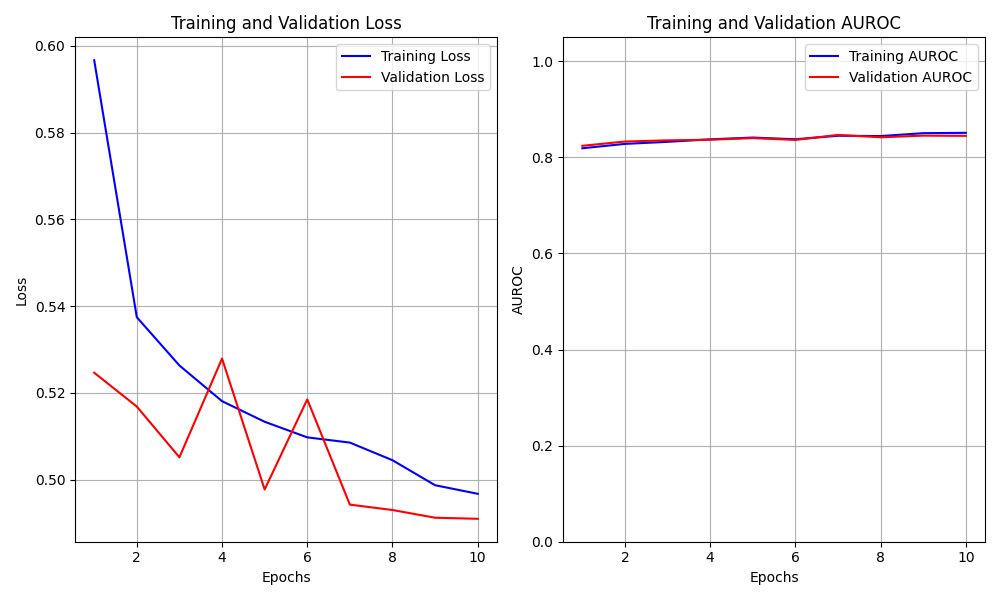
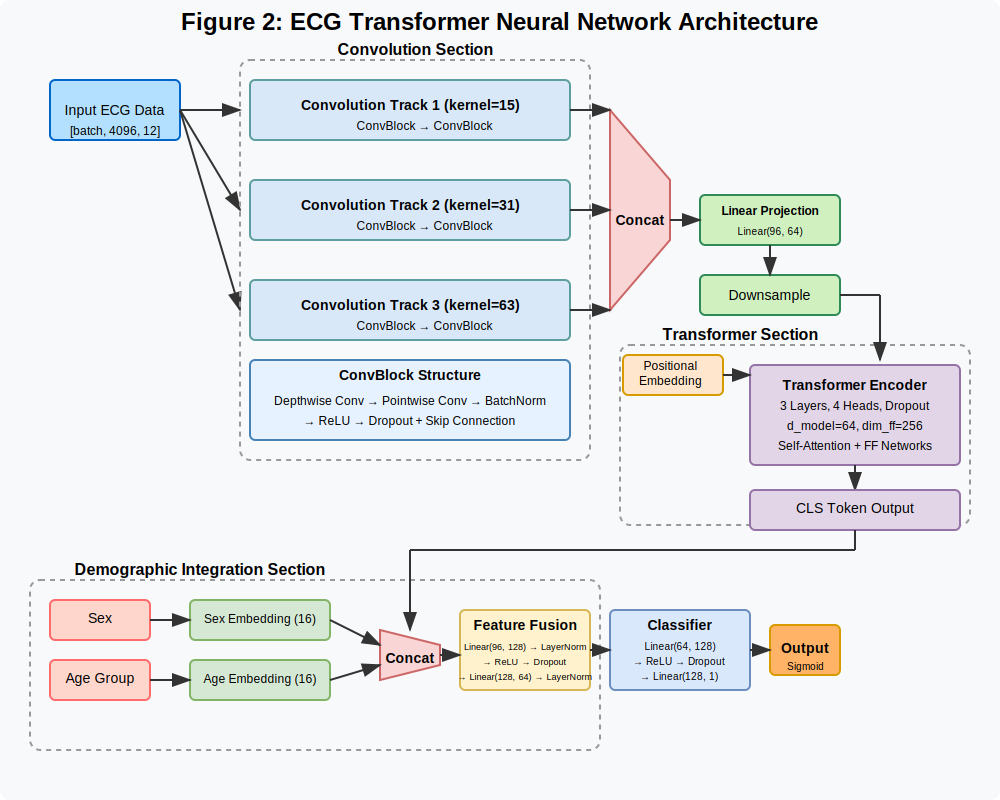

Diagnosing Chagas disease with deep neural networks
📌 TL;DR
- Built and trained a deep neural network (1D CNN) to detect Chagas disease from ECG signals.
- Achieved an Area Under the Receiver Operating Characteristic Curve (AUROC) of 0.84 on unseen data.
- Deployed an interactive app to test predictions on user-uploaded ECGs.
- Applied best practices in deep learning, model evaluation, and deployment.
Overview
Chagas disease is a parasitic illness transmitted by insects, affecting an estimated 8 million people worldwide and causing over 4,750 deaths annually. While most individuals show no noticeable symptoms at the time of initial infection, the disease can progress silently over time, ultimately leading to heart failure in chronic cases.
This project builds on the work of Jidling et al. (2023), who developed a convolutional neural network (CNN) to detect Chagas disease using electrocardiogram (ECG) data. Expanding on their approach, I incorporate the sequential nature of ECG signals by designing a hybrid deep learning model that combines convolutional and transformer architectures. This enhancement significantly improves diagnostic performance: on the validation set, the area under the receiver operating characteristic curve (AUC-ROC) increases from 0.80 with the CNN alone to 0.84 with the combined model. Improving early detection of undiagnosed cases could lead to life-saving interventions for hundreds of patients.
Below, you’ll find an embedded version of the hybrid model. It is followed by a detailed schematic of the architecture and a write-up of this project, which was inspired by the PhysioNet 2025 challenge.
🔍 Try It Yourself
Upload your own ECG input to see predictions from the trained deep learning model. Don’t have ECG data on hand? Try this sample from CODE-15 and SaMi-Trop: sample.
Results
Figure 1 below plots the loss curves for the training and validation set by epoch. The validation loss and AUROC scores plateau by the 6th epoch. Nevertheless, the validation AUROC achieved state-of-the-art results for diagnosing Chagas disease. The best AUROC validation score was 0.84, which constitutes a significant improvement over the 0.80 AUROC score in the convolution only model explored in Jidling et al. (2023).
Figure 1: Loss and AUROC curves demonstrate stable training and generalization over 10 epochs.

The training metrics suggest good model convergence without signs of overfitting. To assess prediction quality at the instance level, we now examine the confusion matrix. Binary predictions were made using a 0.5 probability threshold.
Table 1: Hybrid Convolution Plus Transformer Validation Confusion Matrix
| Actual \ Predicted | Positive | Negative |
|---|---|---|
| Positive | 1151 | 423 |
| Negative | 294 | 1069 |
The model achieves a recall of 0.72 and a precision of 0.78. In clinical contexts, a false negative (i.e., informing a patient they are Chagas-free when they are not) is typically considered a worse error to make. The threshold on this model could be lowered to lower the incidence of false negatives. The implications of this would be to increase false positives, lower precision, but to increase recall.
Methods
The model is a 1D CNN optimized for time-series ECG data. It extracts temporal patterns in raw signals to distinguish Chagas-positive and negative cases with high performance.
Figure 2 below displays the architecture used to diagnose Chagas disease. For a full discussion of the experiments and their results, please read the following paper.
Figure 2: 1D Convolutional Neural Network architecture for ECG signal classification.

Acknowledgments
The following model was developed using CODE-15 and SaMi-Trop data as part of the George B. Moody PhysioNet Challenge 2025.
This application was inspired by a collaborative project originally developed by a team of three: myself, Marc Lafargue, and Matheus Rama Amorim, as part of our coursework at the Georgia Institute of Technology.
References
- Carl Jidling, Daniel Gedon, Thomas B Sch¨on, Claudia Di Lorenzo Oliveira, Clareci Silva Cardoso, Ariela Mota Ferreira, Luana Giatti, Sandhi Maria Barreto, Ester C Sabino, Antonio LP Ribeiro, et al. Screening for chagas disease from the electrocardiogram using a deep neural network. PLoS Neglected Tropical Diseases, 17(7):e0011118, 2023.
- Francisco Rogerlˆandio Martins-Melo, Marcia C Castro, and Guilherme Loureiro Werneck. Levels and trends in chagas disease-related mortality in brazil, 2000–2019. Acta Tropica, 220:105948, 2021.
- Zulma M Cucunub´a, Sebasti´an A Guti´errez-Romero, Juan-David Ram´ırez, Natalia Vel´asquez-Ortiz, Soledad Ceccarelli, Gabriel Parra-Henao, Andr´es F Henao-Mart´ınez, Jorge Rabinovich, Mar´ıa-Gloria Bas´a˜nez, Pierre Nouvellet, et al. The epidemiology of chagas disease in the americas. The Lancet Regional Health–Americas, 37, 2024.